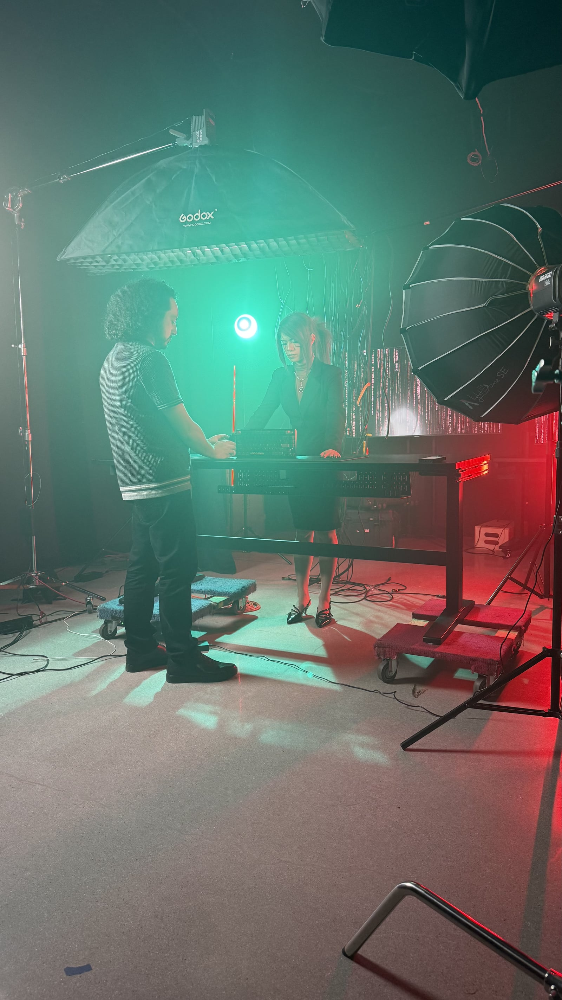

{{ s.title }}
{{ s.lineA }}
{{ s.lineB }}
About
Bay Area, California. Commercial, gaming, and narrative work for teams that need a clear point of view from first brief to final frame.

Point of view
I look for the visual rhythm that already belongs to a piece, then build the direction and edit around it.
I am drawn to work that creates a feeling before it explains itself. The goal is emotional clarity, pacing, and a point of view that belongs to the story.
Direction and editing stay connected: one shapes what happens in front of the lens, the other shapes how it lands.
Process
{{ s.lineA }}
{{ s.lineB }}
Behind the frame
The frame starts before the camera rolls.
Personal
Next
I want to keep pushing into larger narrative work across film, television, games, and campaigns.
Contact